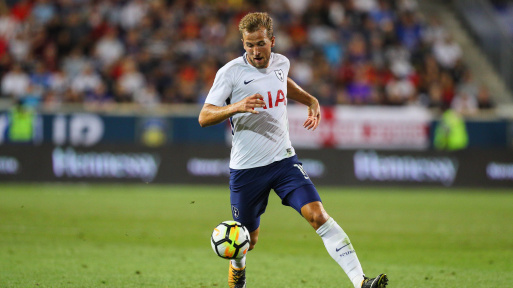

First Name: Andrew
Major: Computer Science
Origin: Long Island, New York
Ive never had meatloaf
Its Harry Kane!

9/20: A big performance from Harry Kane this week. He linked up with Son 4 times! And then got a goal of his own on top of that. Already one of the best performances this season. Lets see Harvey Elliott do that!
Current thoughts: Manchester United need a pacey CB to link up with MaGuire
9/27: Harry Kane adds another to his assist totals with a beatiful feed for Lucas Moura. This feed wouldve been enough for the 3 points if not for the ridiculous penalty call in the 97th minute, also fuck Harvey Elliott
Current thoughts: Manchester United still need a pacey CB to link up with MaGuire, also change the handball rules